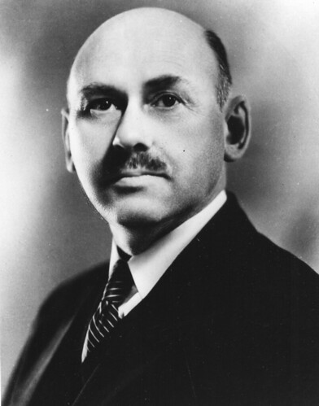
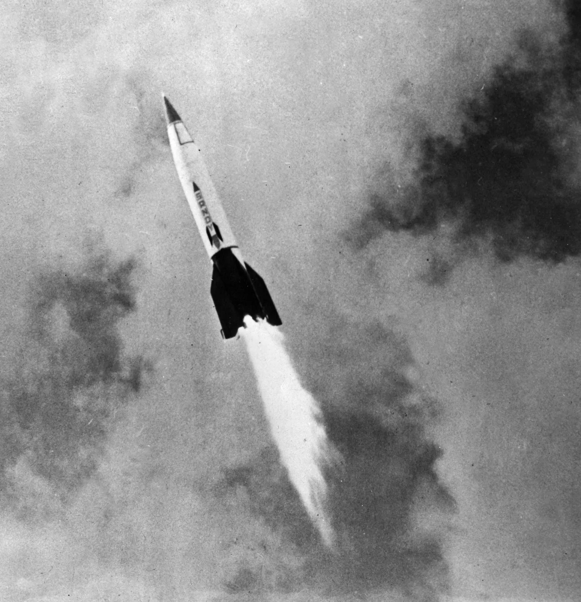
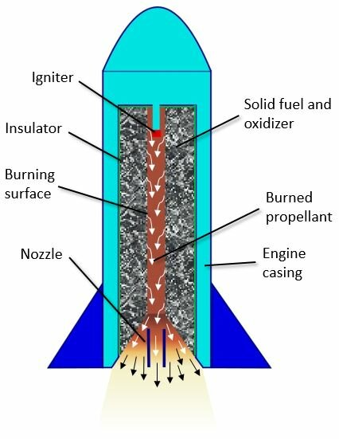
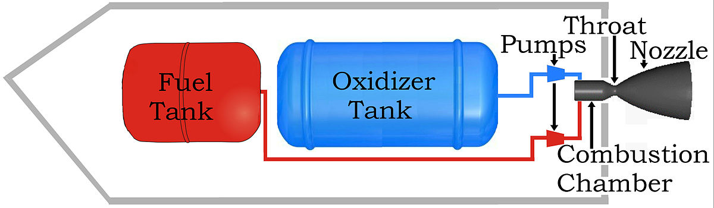

Rocket fuel has been an important staple in the understanding of our universe and space. With this creation we were able to send rovers to check out distant planets and asteroids, gaining valuable understanding of what they are and the potential threat they may pose in the future, we have also been able to send satellites into space allowing for not only technological advancements through things like GPS systems but also being able to collect valuable data from space regarding our planet and the space close around it but this creation has also allowed us to even send our own kind to space and return them safely home.
In this work I will explore the brief history of modern rockets from the late 19th century to what we know them to be today. Then discussing the two main type of engines we use today, discussing how they work and what fuel they use.
Analysis and discussion
History of modern rockets:
Everyone knows of modern-day rockets but how did the rockets come to be what they are today.
Fig.1 Konstantin Tsiolkovsky photograph by unknown author (Wikipedia,2020)
Modern-day space exploration started as an idea proposed by a Russian schoolteacher Konstantin Tsiolkovsky (fig.1) in the very late 19th century, He suggested liquid propellants for greater range for rockets.

Fig.2 Robert H. Goddard photograph by NASA Goddard Space Flight Centre’s photostream (Flickr,2010)
Next in the movement to modern-day rockets was an early 20th-century American scientist Robert H. Goddard (fig.2). He had conducted practical rocketry experiments to achieve higher altitudes. Publishing a pamphlet analysing meteorological sounding rockets and trying different fuel types in 1919. While working on solid-propellant rockets, Goddard discovered that liquid fuel could be more effective. Achieving the first successful flight on March 16, 1926, using liquid oxygen and gasoline, marking the beginning of a new era in rocket flight.
Fig.3 Hermann Oberth photograph by Vittorio Carvelli (Flickr,2018)

Fig.4 V-2 Rocket photograph by Encyclopædia Britannica (Encyclopædia Britannica)
Hermann Oberth (fig.3), a German space pioneer, published a book about outer space and founded the Verein fur Raumschiffahrt Society, which led to the development of the V-2 rocket (fig.4). The V-2 rocket was a significant weapon during World War II able to cause mass devastation even though it was small. After Germany's fall, many unused V-2 rockets were captured by the Allies, leading to development in the U.S. and Soviet space programes. Helping paves the way to make missiles like Redstone, Atlas, and Titan that eventually launched astronauts into space.
In 1957, the Soviet Union launched Sputnik I, the first successful entry in the space race. The US followed with Explorer I in 1958, the same year NASA was established. As space exploration and commercial exploitation increased, satellites allowed scientists to investigate the world, forecast weather, and communicate instantly. As demand for larger payloads increased, rockets evolved from simple gunpowder devices to giant vehicles capable of traveling into outer space, opening the universe for direct exploration by humans. (Benson, 2021)
Modern day rockets, how the engines work:
As we can see society has made a change from mostly using solid fuel rockets to now both solid fuel and liquid rockets being in use, but how do they work?

Fig.5 Solid rocket schematic photo by Mustafa Guven Gok and Omer cihan (research gate,2020)
Fig.6 SLS Rocket photo by Joel Kowsky (NASA,2022)
Solid rockets work using burning a mixture of oxidiser and fuel which releases energy, to be used as kinetic energy as repulsion. As we can see in fig.5 the igniter acts as the thing burning the fuel and the burning surface is where the combusted mixture moves down to be taken to the nozzle to be released by the rocket. There are many different types of oxidisers and fuels that can be used by these rockets, for example in the SLS boosters (fig.6) aluminium powder serves as the fuel and a mineral salt while ammonium perchlorate, is the oxidizer (B, 2016). As you can guess this reaction is extremely exothermic with the temps reaching more than 2,760 degrees Celsius. This causes the water vapor and nitrogen gas released in the experiment to be pushed out causing thrust that allows for the rocket to take off.

FIg.7 Liquid rocket schematic photo by by Nicholas Beeson (Wikimedia commons,2013)
Liquid rockets work differently. Instead of having the fuel and oxidiser together both are kept separately, both are kept in their separate tanks. As seen ins fig.7 the fuel and oxidiser both move down towards the combustion chamber where they react, this reaction just like in the solid rocket, a combustion reaction releasing a lot of energy under very high temperatures, however due to different fuels being used like to be liquid oxygen and liquid hydrogen different products are released. The pumps allow for the control of how much oxidiser and fuel is to be used and the nozzle just like in the solid rocket allow for the flow of these particles and energy to be controlled to allow for thrust to happen on the rocket.
Conclusion:
Since modern rocketry has happened, we have been able to change a lot about how its done. with our rockets going from what we know as fireworks in the early times of humanity, to weapons of destruction and finally to the rockets we know today being able to take humans and resources to space. With that our fuel has also changed with the addition of liquid engines. Even though we have come a long way in a short time there is much more we can do as a society to be better at rocketry with even the engines we have, now being able to hopefully be not only more cost effective but also more efficient in the future.
References
Figures:
1. (2020) Konstantin Tsiolkovsky. Available at: https://en.wikipedia.org/wiki/Konstantin_Tsiolkovsky#/media/File:Константин_Циолковский.jpg (Accessed: 6 December 2024).
2. (2010) Dr. Robert H. Goddard. Available at: https://www.flickr.com/photos/gsfc/4244595655/in/album-72157623138264584 (Accessed: 6 December 2024).
3. Carvelli V, (2018) Dr. Hermann Oberth - Raumflug - Third Reich - Club Jaguar - Vittorio Carvelli Available at: https://www.flickr.com/photos/147362245@N07/41230707624/in/photostream/ (Accessed: 6 December 2024).
4. Encyclopædia Britannica Rocketology: NASA’s Space Launch System. Available at: https://www.britannica.com/science/space-exploration#/media/1/621151/139688 (Accessed: 6 December 2024).
5. Gok M, Cihan O. (2020) Energetic Materials and Metal Borides for Solid Propellant Rocket Engines (page.110). Available at : https://www.researchgate.net/publication/348035213_Energetic_Materials_and_Metal_Borides_for_Solid_Propellant_Rocket_Engines (Accessed: 6 December 2024).
6. Kowsky J. (2022) SLS Facts sheet. Available at: https://www.nasa.gov/humans-in-space/space-launch-system/sls-fact-sheets/ (Accessed: 6 December 2024).
7. Nwbeeson. (2013) File:LiquidFuelRocketSchematic.jpg. Available at: https://commons.wikimedia.org/wiki/File%3ALiquidFuelRocketSchematic.jpg (Accessed: 6 December 2024).
Benson, T. (2021) https://www.grc.nasa.gov/www/k-12/rocket/TRCRocket/history_of_rockets.html. Available at: https://www.grc.nasa.gov/www/k-12/rocket/TRCRocket/history_of_rockets.html (Accessed: 04 December 2024).
B, P. (2016) Rocketology: NASA’s Space Launch System. Available at: https://blogs.nasa.gov/Rocketology/2016/04/21/weve-got-rocket-chemistry-part-2/ (Accessed: 4 December 2024).

 Fig.6 SLS Rocket photo by Joel Kowsky (NASA,2022)
Fig.6 SLS Rocket photo by Joel Kowsky (NASA,2022)